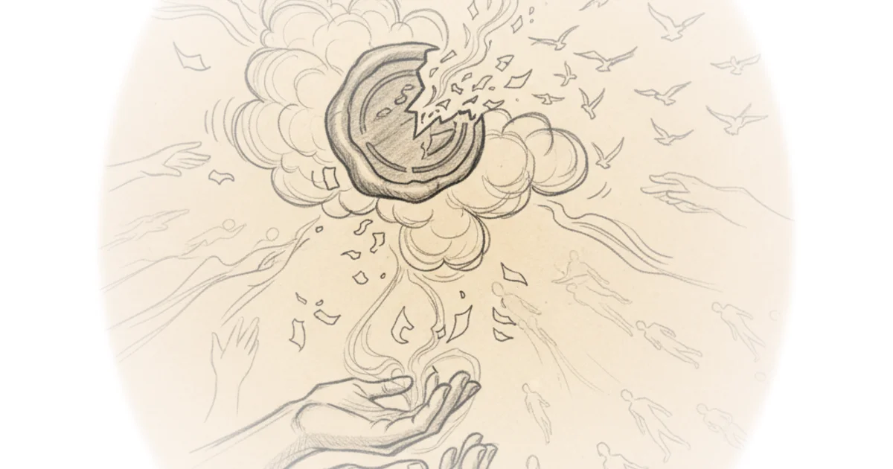

The white journalist who turned his skin black to expose the jim crow South Kahlil Greene · History Can't Hide ·Jun 12, 2026 · 11 min read · Media Criticism
Weekly dose of optimism #197 Packy McCormick · Not Boring ·Jun 12, 2026 · 10 min read · Media Criticism
Crosspost: RENÉE DiRESTA: Red mirage, blue shift, online cope Brad DeLong · DeLong's Grasping Reality ·Jun 10, 2026 · 13 min read · Media Criticism
The watch's chris ryan and andy greenwald in... True detective season one Freddie deBoer · ·Jun 10, 2026 · 24 min read · Media Criticism
Attempt to seal court filing, and to order members of the public to destroy their copies, withdrawn Various · Reason ·Jun 9, 2026 · 11 min read · Media Criticism 
The public sphere & "civility": Hoisted from the archives Brad DeLong · DeLong's Grasping Reality ·Jun 8, 2026 · 12 min read · Media Criticism
On defeating the Stupid/Interested quadrant Richard Hanania · ·Jun 8, 2026 · 13 min read · Media Criticism
The administration fired scott pelley Robert Reich · Robert Reich ·Jun 7, 2026 · 25 min read · Media Criticism
Criticizing the everything machine Cory Doctorow · Pluralistic ·Jun 6, 2026 · 12 min read · Media Criticism
Of course this is a coordinated ratfucking of graham platner Freddie deBoer · ·Jun 5, 2026 · 10 min read · Media Criticism
A billionaire explains why American business now feels like the mafia Matt Stoller · BIG by Matt Stoller ·Jun 5, 2026 · 21 min read · Media Criticism
The origins of horseshoe politics Matt Yglesias · Slow Boring ·Jun 5, 2026 · 14 min read · Media Criticism
In Britain, a tragic murder was followed by mass confusion Yascha Mounk · Persuasion ·Jun 4, 2026 · 14 min read · Media Criticism
Welcome to the postmodern presidency Yascha Mounk · Persuasion ·Jun 3, 2026 · 11 min read · Media Criticism
Where did the 40,000 Iran protests death toll number come from? Mehdi Hasan · Zeteo ·Jun 2, 2026 · 27 min read · Media Criticism
The tedious power of storytelling (02 jun 2026) must-we-pretend Cory Doctorow · Pluralistic ·Jun 2, 2026 · 17 min read · Media Criticism
Re: The truly abominable kevin hassett: Steve durlauf does the work of the lord: Life in the 2000s Brad DeLong · DeLong's Grasping Reality ·Jun 1, 2026 · 12 min read · Media Criticism
Weekend update #187: Trying to collapse the Russian army from Behind--What to watch out for Phillips P. O'Brien · Phillips P. O'Brien ·May 31, 2026 · 10 min read · Media Criticism
Book review: The dialectical imagination Scott Alexander · Astral Codex Ten ·May 29, 2026 · 38 min read · Media Criticism
Rejected search warrant applications raise further questions about the federal case against don… Various · Reason ·May 28, 2026 · 10 min read · Media Criticism
AI and a world without migrants Cory Doctorow · Pluralistic ·May 27, 2026 · 14 min read · Media Criticism
The case of the dems’ missing After-Action report Yascha Mounk · Persuasion ·May 26, 2026 · 13 min read · Media Criticism
No honor among (ad-tech) thieves Cory Doctorow · Pluralistic ·May 25, 2026 · 13 min read · Media Criticism
Are you tired of the the administration era yet? Noah Smith · Noahpinion ·May 25, 2026 · 14 min read · Media Criticism